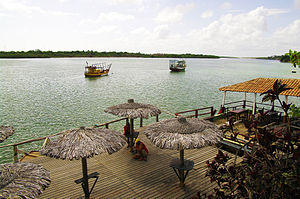
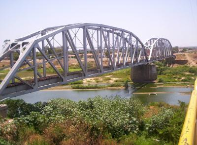

Informações técnicas sobre relevo, população, IDH etc.
| INFORMAÇÕES | |
|---|---|
| Municípios limítrofes | Limoeiro do Norte, Morada Nova, Tabuleiro do Norte, Alto Santo e Morada Nova |
| Fundação | 1 de junho de 1958 (63 anos) |
| Área total | 280,436 km² |
| Clima | quente e seco |
| IDH | 0,694 — médio |
| PIB | R$ 3 989,20 |
| INFORMAÇÕES TERRITORIAIS | |
|---|---|
| Número de habitantes | 7 645 habitantes |
| Superfície de São João Do Jaguaribe |
28 045 hectares
280,45 km² (108,28 sq mi) |
| Densidade populacional | 27,3 ha./km² |
| Altitude de Soão João Do Jaguaribe | 34 metros de altitude |
| Coordenadas geográficas decimais |
Latitude:
-5.27713
Longitude: -38.2678 |
| Coordenadas geográficas sexagesimais | Latitude: 5° 16' 38'' Sul , Longitude: 38° 16' 4'' Oeste |
| INFORMAÇÕES DO MUNICÍPIO | |
|---|---|
| Endereço da Prefeitura Municipal de São João Do Jaguaribe |
São João do Jaguaribe
Prefeitura de São João Do Jaguaribe
Rua Conego Climério Chaves, 307 SÃO JOÃO DO JAGUARIBE - CE, 62965-000 Brasil Work +55 88 3420-1121 Fax +55 88 3420-1770 |
| Telefone da prefeitura |
(88) 3420-1121
Internacional: +55 88 3420-1121 |
| Fax |
(88) 3420-1770
Internacional: +55 88 3420-1770 |
| Endereço eletrônico da prefeitura |
prefeiturasjj@brisanet.com.br
|
| Site oficial do município | saojoaodojaguaribe.ce.gov.br |
| INFORMAÇÕES DO ADMINISTRATIVAS | ||
|---|---|---|
| Prefeito de São João Do Jaguaribe | RAIMUNDO CESAR MORAIS MAIA | |
| Partido politico | PSD | |
| INFORMAÇÕES DE TRANSPORTE | |
|---|---|
| Transporte urbano disponível | - |
| Aeroporto |
Aeroporto Internacional Pinto Martins
Aeroporto Regional do Cariri
243 km
Aeroporto Dix-Sept Rosado
100.5 km
|
| INFORMAÇÕES DE DISTÂNCIA A OUTRAS CIDADES | ||
|---|---|---|
| São Paulo : 2223 km | Rio de Janeiro : 2033 km | Brasília : 1575 km |
| Salvador : 1030 km | Belo Horizonte : 1886 km | Manaus : 2388 km |
| Curitiba : 2675 km | Fortaleza : 176 km mais perto | Goiânia : 1858 km |
| Belém : 1136 km | Porto Alegre : 3073 km | Guarulhos : 2201 km |
| Campinas : 2178 km | São Luís : 737 km | São Gonçalo : 2.368 km |
| Distância calculada em linha reta! | ||
Conheça mais sobre a história de São João do Jaguaribe.
São João do Jaguaribe é um município brasileiro do estado do Ceará localizado na Mesorregião do Jaguaribe, no Vale do Jaguaribe, às margens do Rio Jaguaribe. É um dos núcleos mais antigos do Ceará.
O distrito de São João tornou-se autônomo, sendo erigido à categoria de vila conforme a Lei nº 1.255, de 28 de Dezembro de 1868. Em alteração que se processa através da Lei nº 1.402, de 22 de Julho de 1871, extingue-se a situação anterior e mantém-se a subordinação precedente. A sua restauração à categoria de município deu-se conforme Lei nº 3.813, de 13 de Setembro de 1957, instalando-se a 25 de Março de 1959.
Saiba mais sobre os melhores lugares e o que fazer em São João do Jaguaribe.
O rio Jaguaribe é um curso de água que banha o estado do Ceará, no Brasil.No seu leito, foram construídos os dois grandes açudes cearenses: o Orós e o Castanhão. Sua bacia hidrográfica está situada em sua quase totalidade dentro dos limites do estado do Ceará, com ínfima parcela estendendo-se ao sul para o estado de Pernambuco, ocupando parte dos municípios de Exu, Moreilândia e Serrita. Ocupa cerca de 51,9% da área total do estado, o que equivale a, aproximadamente, 75 669 km². As cabeceiras de suas sub-bacias servem de limite entre o Ceará e os estados do Piauí, Pernambuco, Paraíba e Rio Grande do Norte. É o maior curso de água do território cearense com 633 km de extensão.
Os braços do rio Jaguaribe chegavam a desaparecer em épocas de seca, o que lhe rendeu o título de "maior rio seco do mundo", retornando e crescendo muito rápido em volume e extensão na estação chuvosa, tornando necessário usar canoas para atravessá-lo.

Veja como chegar nos melhores pontos de São João do Jaguaribe.